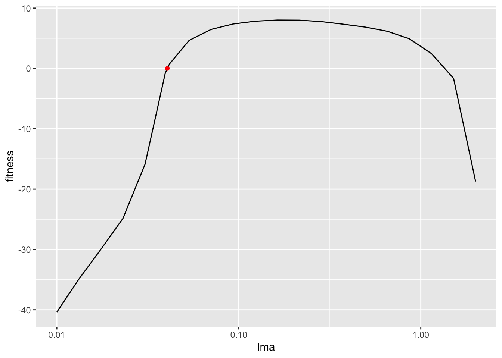
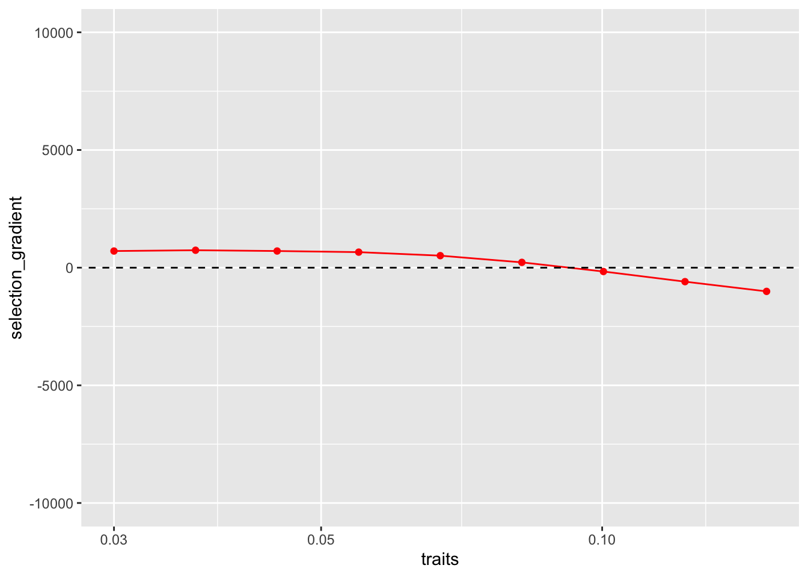
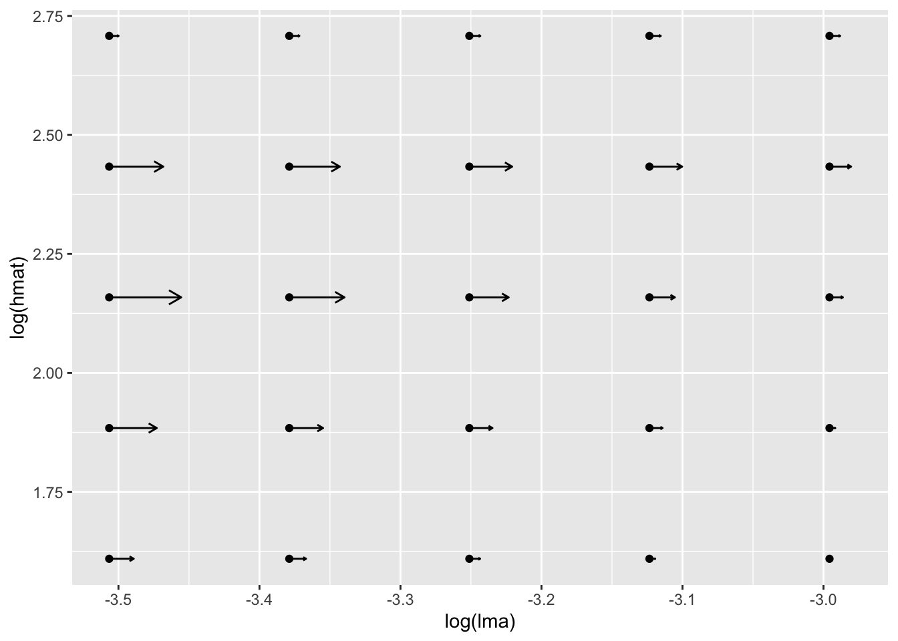

library(plant)
library(regnans)
library(parallel)
library(tidyverse)
model_support <- list(
p = plant_default_assembly_pars(),
plant_control = plant_default_assembly_control()
)Finding evolutionary attractors
An evolutionary attractor is a set of trait values towards which small evolutionary steps move a resident population. At the attractor, the selection gradient is zero: a small increase or decrease in the trait does not have an immediate fitness advantage.
This page shows how to calculate selection gradients for a one-species plant community. We first vary leaf mass per area (lma) alone, then vary lma and height at maturation (hmat) together.
Set up the model
Load the required packages and use the default parameters for community assembly:
One trait: leaf mass per area (lma)
Selection gradients
We begin by calculating the selection gradient at one value of lma. A positive gradient favours mutants with slightly larger lma; a negative gradient favours slightly smaller values.
trait <- 0.04045
# Start with an empty community.
community0 <-
community_start(
bounds(lma = c(0.01, 2)),
fitness_control = list(method = "grid", n_evals = 20),
model_support = model_support
)
community_eq <-
community0 %>%
# Add one resident strategy with the chosen trait value.
community_add(trait_matrix(trait, "lma"), birth_rate = 200) %>%
# Solve for its demographic equilibrium.
community_demography() %>%
# Calculate the local slope of invasion fitness.
community_selection_gradient()
community_eq$resident_fitness
#> [1] 3.791258e-06
community_eq$selection_gradient
#> [1] 722.4031The resident fitness is close to zero because its population has been brought to demographic equilibrium. The positive selection gradient means that a mutant with slightly larger lma would have an advantage.
We can see the same result in the local fitness landscape. The resident is shown in red, and the slope at that point is positive:
community_eq <- community_eq %>%
community_fitness_landscape()
data <-
community_eq$fitness_points
ggplot(data, aes(lma, fitness)) +
geom_line() +
geom_point(data = filter(data, resident), col="red") +
scale_x_log10()
One gradient describes only one resident trait value. To locate the attractor, we repeat the calculation across a range of lma values. The attractor is where the gradient crosses zero.
The helper function below adds a resident, solves its demography, and calculates its selection gradient:
f <- function(x, community) {
community %>%
community_add(trait_matrix(x, "lma")) %>%
community_demography() %>%
community_selection_gradient()
}
# Create a sequence of trait values and solve each resident community.
data_communities <-
tibble(traits = seq_log_range(c(0.03, 0.15), length.out = 9)) %>%
mutate(
# Solve one equilibrium community for each trait value.
communities = parallel::mclapply(
traits, function(x) f(x, community0),
mc.cores = base::max(1L, parallel::detectCores() - 2L, na.rm = TRUE)
),
# Extract the selection gradient from each solution.
selection_gradient = map_dbl(communities, ~ .x$selection_gradient)
)
# Plot the gradient against the resident trait value.
plot_sg <-
ggplot(data_communities, aes(traits, selection_gradient)) +
geom_line(col="red") +
geom_point(col="red") +
geom_abline(intercept = 0, linetype = "dashed") +
ylim(-10000, 10000) +
scale_x_log10()
plot_sg
Using a root solver to find the 1D attractor
The sign-change plot helps us see the attractor, but a root finder gives a more precise estimate. community_solve_singularity_1D() wraps the demographic and selection-gradient calculations and searches for the trait value where the gradient equals zero:
community_attractor <- community0 %>%
community_solve_singularity_1D(bounds = c(0.05, 0.15), tol = 1e-4)
community_attractor$traits
#> lma
#> [1,] 0.09258669Add the root finder’s solution to the selection-gradient plot:
plot_sg +
geom_point(col="red",
data = tibble(
traits = community_attractor$traits, selection_gradient = community_attractor$selection_gradient
)
)Two traits: lma and hmat
Selection gradients
With two evolving traits, the selection gradient is a vector with one component for each trait. The following example calculates that vector for a resident with lma = 0.04045 and hmat = 10:
traits <- c(0.04045, 10)
# Start with an empty two-trait community.
community0 <-
community_start(
bounds(lma = c(0.01, 2), hmat = c(0.01, 100)),
fitness_control = list(method = "grid"),
model_support = model_support
)
community_eq <-
community0 %>%
# Add one resident with the chosen lma and hmat values.
community_add(trait_matrix(traits, c("lma", "hmat")), birth_rate = 200) %>%
# Solve for its demographic equilibrium.
community_demography() %>%
# Calculate one selection-gradient component for each trait.
community_selection_gradient()
community_eq$resident_fitness
#> [1] 4.179057e-08
community_eq$selection_gradient
#> [1] 5612.9908389 0.7616763Resident fitness is again close to zero at demographic equilibrium. The two selection-gradient values describe the locally favoured direction of change in lma and hmat.
To see how that direction changes across trait space, we calculate the gradient on a grid. The two-dimensional attractor lies where both gradient components are zero. We can reuse a helper function similar to the one-trait version:
f <- function(x, community) {
community %>%
community_add(trait_matrix(x, c("lma", "hmat"))) %>%
community_demography() %>%
community_selection_gradient()
}
# Create a grid of trait combinations and solve each resident community.
data_communities <-
expand_grid(
lma = seq_log_range(c(0.03, 0.05), length.out = 5),
hmat = seq_log_range(c(5, 15), length.out = 5)
) %>%
mutate(i = seq_len(n())) %>%
nest(.by = i, .key = "traits") %>%
mutate(
# Solve one equilibrium community for each trait combination.
communities = parallel::mclapply(
traits, function(x) f(as.matrix(x), community0),
mc.cores = base::max(1L, parallel::detectCores() - 2L, na.rm = TRUE)
))
data_communities2 <-
data_communities %>%
mutate(
selection_gradient_lma = map_dbl(communities, ~ .x$selection_gradient[1]),
selection_gradient_hmat = map_dbl(communities, ~ .x$selection_gradient[2])
) %>%
unnest(traits)
# Plot the selection-gradient vector field. ggquiver draws the two gradient
# components as an arrow at each grid point. Both trait axes use log coordinates.
library(ggquiver)
plot_sg <-
data_communities2 %>%
ggplot(aes(x = log(lma), y = log(hmat), u = selection_gradient_lma, v = selection_gradient_hmat)) +
geom_point() +
geom_quiver(vecsize = 0.4)
plot_sg
Each arrow shows the locally favoured direction of evolutionary change. The arrows converge near the joint attractor, where both components approach zero. regnans does not yet provide a two-dimensional equivalent of community_solve_singularity_1D(), so this example locates the attractor approximately from the vector field.